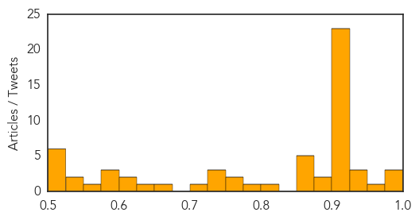

Measles
30-Day Web Trend
2 alerts, 0 warnings

30-Day Twitter Trend
0 alerts, 0 warnings

Article Locations

Article Confidences

Top Articles:
- 0.903
- Alarm over measles surge
- 0.843
- Health officials confirm second D.C.-area measles case
- 0.841
- Va. health officials report second confirmed measles case, warn of potential exposures
- 0.828
- International SOS Offers Advice in South East Asia after Sharp Rise in Measles Cases
- 0.814
- Why are vaccination rates dropping?
- 0.779
- Measles patients with complications being admitted to CHK
- 0.735
- Regional alert issued after second measles case reported
- 0.631
- Aid agencies working to improve conditions for S. Sudan refugees in Ethiopia - Ethiopia
- 0.614
- Virginia Measles Exposure Might Have Extended To Bethesda
- 0.530
- A normal reaction?: Six more children faint during measles drive
Top Tweets:
-
No tweets found for May 21, 2014
Unknown
30-Day Web Trend
6 alerts, 5 warnings
30-Day Twitter Trend
1 alerts, 0 warnings
Article Locations
Article Confidences
Top Articles:
- 0.998
- Flesh-eating case confirmed in Capital health hospital
- 0.997
- MERS Virus Outbreak and How It Impacts Wyoming
- 0.977
- Doctor exposed to MERS in Florida hospital has left Canada
- 0.953
- Mers virus: Saudi health minister promises to do more
- 0.947
- Ban expresses concern for flood-hit Balkans as UN scales up disaster response - Serbia
- 0.943
- Special Report - Saudi Arabia takes heat for spread of MERS virus
- 0.933
- Health officials: Don't eat raw clover sprouts
- 0.917
- Chicago Tribune
- 0.917
- Chicago Tribune
- 0.917
- Chicago Tribune
- 0.917
- Chicago Tribune
- 0.917
- Chicago Tribune
- 0.917
- Chicago Tribune
- 0.917
- Chicago Tribune
- 0.917
- Chicago Tribune
- 0.917
- Chicago Tribune
- 0.917
- Chicago Tribune
- 0.917
- Chicago Tribune
- 0.917
- Chicago Tribune
- 0.917
- Chicago Tribune
- 0.917
- Chicago Tribune
- 0.917
- Chicago Tribune
- 0.917
- Chicago Tribune
- 0.917
- Chicago Tribune
- 0.917
- Chicago Tribune
- 0.917
- Chicago Tribune
- 0.917
- Chicago Tribune
- 0.917
- Chicago Tribune
- 0.917
- Chicago Tribune
- 0.917
- Chicago Tribune
- 0.899
- Can the Chickenpox Vaccine Cause Shingles Later in Life?
- 0.892
- E. Coli outbreak linked to Idaho sprout producer
- 0.866
- No evidence of Russian troop pullback from border
- 0.866
- Obama to make statement on veterans controversy
- 0.866
- Egypt court jails 155 Brotherhood supporters
- 0.866
- Gunmen kill Chinese engineer in Libya's Benghazi
- 0.864
- Investigation into Salmonella outbreak linked to laverbread continues
- 0.822
- Avian flu research poses unnecessary risk, experts warn
- 0.793
- Raw Clover Sprouts Linked to E. coli Illness Outbreak in Washington and Idaho
- 0.769
- Polio: An unwelcome return
- 0.761
- Kawasaki Disease a Wind-borne Malady
- 0.744
- New tick-borne illness emerges in New England
- 0.740
- Deadly pig virus likely to ease in US by year's end, expert claims
- 0.728
- Disease warning in floodhit Balkans
- 0.700
- CDC: Fast Work and Strong Epidemiological Evidence Led to Source of E. Coli Outbreak
- 0.666
- Disease warning issued in deluged, grieving Balkans
- 0.642
- Vedolizumab approved to treat ulcerative colitis, Crohn disease
- 0.611
- Doctors Continue to Prescribe Unnecessary Antibiotics for Bronchitis
- 0.604
- Balkans count cost of floods, brace for more
- 0.600
- New HPV Test To Screen For Cervical Cancer Not Doing Away With Pap Smears Just Yet « CBS San Francisco
Showing top 50 articles...
Top Tweets:
- 0.554
- Faster vaccination saves lives, money during flu pandemic http://t.co/h6zVNPGFUy